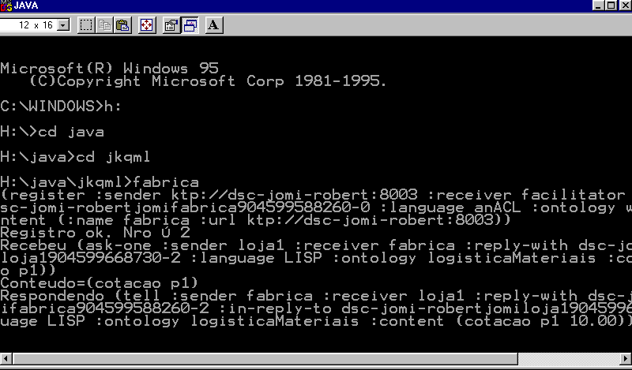
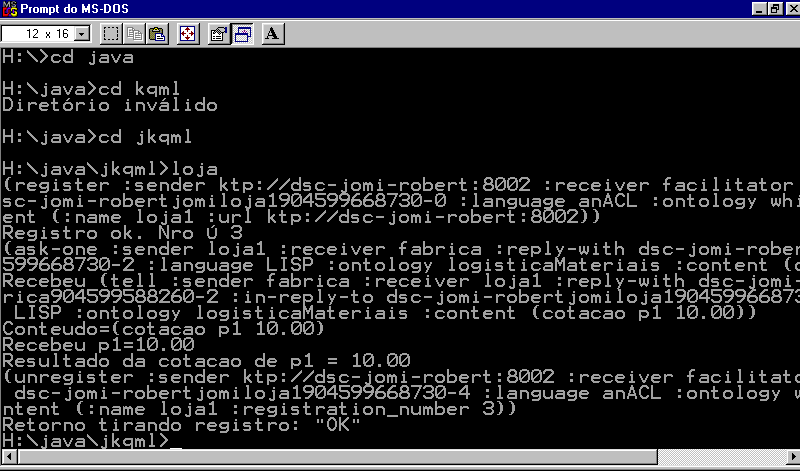

Avaliação da comunicação entre agentes utilizando KQML
Jomi Fred Hübner
Alexandre Rodrigues Coelho
Abstract
In agents societies, one important feature is the skill of achieve a solution for a common problem working together, in working together they need to interact by communication. Inter agents communication only occurs if they have the same language. KQML (Knowledge Query and Manipulation Language) is an such language that has many wonder features. This paper presents an experimentation with an implementation of KQML, Java KQML, and draw some conclusions.
Resumo
Em sociedades de agentes, um dos aspectos mais importantes é capacidade dos agentes cooperarem na solução de um problema comum, tal cooperação necessita de comunicação. Para que ocorra a comunicação entre os agentes é preciso estabelecer uma linguagem de comunicação entre eles que obedeça algumas exigências, tais como: ser linear, prover um modelo simples para se ajustar a uma ampla variedade de sistemas, se ajustar bem à arquitetura da rede. Uma proposta de linguagem com estas características é a KQML (Knowledge Query and Manipulation Language). Neste artigo estudou-se uma implementação de KQML disponível na Internet, o JKQML (Java KQML).
Palavras chaves
Agentes; comunicação entre agentes; KQML
Os sistemas computacionais construídos a partir de um grupo de agentes apresentam características particulares que os diferenciam de programas convencionais, como, por exemplo: distribuição das tarefas entre vários computadores numa rede; autonomia de funcionamento de cada agente; funcionamento continuo; capacidade de comunicação com de outros agentes - sociabilidade; e mobilidade. O paradigma de desenvolvimento orientado a agentes é muito utilizados em aplicações na Internet onde um agente pode "navegar" pela rede em busca de informações que sejam relevantes ao seu usuário [WOO94].
Os agentes são sistemas computacionais que apresentam características particulares que os diferenciam de programas convencionais, dentre elas, pode-se citar: tem maior autonomia (controlam seu fluxo de execução e dispensam interação constante com um usuário); estão continuamente em funcionamento; são sociáveis (capacidade de comunicação e conhecimento dos outros); e são móveis (podem sair de um computador e continuar sua execução lá). Devido a estas características são muito utilizados, por exemplo, em aplicação na Internet onde um agente pode "navegar" na rede em busca de informações que julge interessantes para seu usuário.
A utilização da deste paradigma social traz uma série de novas perspectivas para a computação pois considera sistemas:
A incorporação destas características aos sistemas de computação atuais é de grande importância para a melhoria da qualidade destes. Pela mudança de enfoque, a IAD apresenta, em alguns casos, um modelo de solução muito mais simples que modelos tradicionais.
Como pode ser observado na própria definição de agente, a interação entre eles é um dos aspectos mais importantes na resolução de um problema. Contudo, a forma, mais precisamente, o protocolo, desta comunicação não é fácil de ser implementado num sistema real. Na maioria dos casos, o componente de comunicação de um agente não é bem estruturado e independente, estando disperso por todo o código de programa que implementa o agente. Este artigo pretende apresentar a linguagem KQML como solução para comunicação entre agentes e avaliar se ela demonstra as características desejáveis numa linguagem de comunicação de agentes (LCA).
Ambientes computacionais atualmente emergindo, como a Internet, têm várias características que colocam exigências para implementação de agente, pois o ambientes é heterogêneo e envolve padrões, plataformas e formatos de dados diferentes. Para a implementação de um mecanismo de comunicação entre agentes neste ambiente é preciso cumprir algumas exigências básicas [MAY96]:
Uma proposta de atingir as características enumerados acima é KQML (Knowledge Query and Manipulation Language). KQML é uma linguagem e um protocolo para a comunicação entre agentes, visando suportar a troca de informação e conhecimento entre os agentes. KQML pode ser utilizada como a linguagem que um agente utiliza para interagir com um outro agente, ou para dois ou mais sistemas inteligentes compartilharem conhecimento para solução cooperativa de problemas [FIN96].
KQML é uma linguagem que pode ser dividida em três camadas [FIN96]:
KQML é projetado para ser usado com vários mecanismos (atualmente há implementações que usam TCP/IP, SMTP (email), HTTP e CORBA). O agente de KQML pode falar diretamente a outro agente ou pode enviar mensagens a múltiplo agentes do mesmo grupo.
O ambiente operacional para agentes KQML é altamente distribuído, heterogêneo e extremamente dinâmico. Para satisfazer as exigências de tal ambiente, a linguagem KQML prove ferramentas formais que trabalham com outras linguagens e protocolos.
Apesar de atender os principais características de uma linguagem de comunicação de agentes, KQML ainda não tratou adequadamente as questões de segurança e autenticação de agentes em mensagens KQML.
As categorias básicas de performativas (baseado na teoria dos atos de fala [ALL87]) são as seguintes:
|
Performativas |
Identificadores |
|
Informações genéricas |
tell, achieve, cancel, untell, unachieve |
|
Consultas básicas |
evaluate, ask-if, ask-in, ask-one, ask-all |
|
Múltiplas respostas para consultas |
stream-in, stream-all |
|
Resposta |
reply, sorry |
|
Geradoras |
standby, ready, next, rest, dicard, generator |
|
Definição de capacidade e notificação |
advertise, subscribe, monitor, import, export |
|
Rede |
register, unregister, forward, broadcast, route, transport-address |
KQML também possui um conjunto de parâmetros chaves reservados, sendo útil para estabelecer graus de uniformidade dos parâmetros e suporte para que programas entendam performativas desconhecidas mas com parâmetros conhecidos. Os parâmetros reservados e seus significados estão demonstrados na tabela seguinte:
|
Parâmetro Chave |
Significado |
|
: content |
A informação sobre qual performativa expressa uma atitude |
|
: force |
Se o transmissor irá sempre negar o significado da performativa |
|
: in-reply-to |
O rótulo esperado em resposta |
|
: language |
o nome de uma linguagem contida no parâmetro :content |
|
: ontology |
o nome da ontologia usado no parâmetro : content |
|
: receiver |
o receptor atual da performativa |
|
: reply-with |
se o transmissor espera uma resposta, e se sim, um rótulo para a resposta |
|
: sender |
o atual transmissor da performativa |
Abaixo estão apresentados exemplos de algumas performativas.
A performativa tell indica que a sentença está na base de conhecimento do transmissor.
tell
: content <expressão>
: language <palavra>
: ontology <palavra>
: in-reply-to <expressão>
: force <palavra>
: sender <palavra>
: receiver <palavra>
A perfomativa reply indica que o transmissor acredita que : content é uma resposta apropriada para a consulta na mensagem: in-reply-to.
reply
: content <expressão>
: language <palavra>
: ontology <palavra>
: in-reply-to <expressão>
: force <palavra>
: sender <palavra>
: receiver <palavra>
Existem várias implementações de KQML, mas em especial foi estudada a implementação da linguagem feita pela IBM, chamada de JKQML. JKQML é uma implementação de KQML em Java que suporta 22 das performativas propostas na especificação de KQML (a qual define 36 performativas) [JQK98].
Abaixo estão demonstradas os tipos de mensagens aceitas por JKQML:
1) Performativas discursivas: ask-if, ask-all, tell, insert, delete-one, advertise, unadvertise, subscribe
2) Performativas de intervenção: error, sorry, discard
3) Perfomativas de facilitação e de rede: register, unregister, transport-address, forward, broker-one, broker-all, recommend-one, recommend-all, recruit-one, recruit-all reply.
Num grupo de agentes que comunica-se utilizando JQKML há a necessidade de existir um agente que viabilize a comunicação, este agente é chamado facilitador. Sua principal função é conhecer o endereço e o nome dos agentes da sociedade, passando esta informação aos demais de modo que eles possam trocar mensagens usando apenas o nome do agente como referência. Todos os agentes têm que saber o endereço físico do facilitator para se comunicar com outros agentes. O arquivo que indica o endereço físico do facilitator e os protocolos que são suportados é facilitator.properties. O arquivo é configurado e deve ser armazenado no diretório onde está especificado a variável de ambiente "jkqml.home".
Dois tipos de facilitadores são suportados. Um é o ATPFacilitator o qual utiliza o ATP protocolo (agent transfer protocol) e é executado no ambiente dos aglets. E o outro é o KTP protocolo (KQML transfer protocol).
Para estudar e exemplificar o uso da ferramenta JQML foi desenvolvido um sistema com dois agentes:
Na experimentação, há a seguinte troca de mensagens:
|
Agente Pedido envia a seguinte mensagem |
(ask-one |
|
Agente Fabrica manda a mensagem |
(tell |
// Modelo de agente que usa KQML
//
// implementa os metodos
// registra: registra o agente no facilitador e cria o gerente de mensagens KQML
// termina: tira o registro no facilitador e para o gerente KQML
//
import com.ibm.acl.kqml.*;
import com.ibm.acl.util.Syslog;
import java.net.*;
public class Agente {
KQMLManager km;
String facilitator = "facilitator";
String meuNome;
String nroRegistro;
String localHost;
int porta;
int timeout = 10000;
// Constructor
public Agente(String agentName, int port) {
this.meuNome = agentName;
this.porta = port;
try {
StringBuffer buf = new StringBuffer("ktp://");
InetAddress home = InetAddress.getLocalHost();
buf.append(home.getHostName() + ":");
buf.append(Integer.toString(port));
localHost = new String(buf.toString());
// cria o KQMLManager usando protocolo ktp
km = new KQMLManager(meuNome, "ktp", porta);
registra();
} catch (Exception e) {
System.err.println("Erro na criacao do agente!");
System.exit(1);
} }
void registra() {
// cria a mensagem KQML de registro
KQML registro = new KQML();
registro.setPerformative(KQML.REGISTER);
registro.setSender(localHost);
registro.setReceiver(facilitator);
registro.setRW(km.getInitialID());
registro.setLanguage("anACL");
registro.setOntology("whitepages");
registro.setContent("(:name " + meuNome + " :url " + localHost + ")");
Conversation conv = null; // manda a mensagem
try {
imprime(registro.toString());
conv = km.sendMessage(registro);
nroRegistro = (String) conv.waitAndGetResponse(timeout); // espera a resposta
imprime("Registro ok. Nro é " + nroRegistro);
} catch (Exception ex) {
System.err.println("Registro falhou!");
System.exit(1);
} }
public void termina() {
// tira o registro no facilitador
KQML unregister = new KQML();
unregister.setPerformative(KQML.UNREGISTER);
unregister.setSender(localHost);
unregister.setReceiver(facilitator);
unregister.setRW(km.getInitialID());
unregister.setLanguage("anACL");
unregister.setOntology("whitepages");
unregister.setContent("(:name "+meuNome+ " :registration_number "+nroRegistro+")");
Conversation conv = null;
try {
imprime(unregister.toString());
conv = km.sendMessage(unregister);
String result = (String) conv.waitAndGetResponse(timeout);
imprime("Retorno tirando registro: " + result);
} catch (Exception ex) {
System.err.println("unregister failed, exit.");
System.exit(1);
}
km.stop(timeout); // termina o gerenciador de mensagens
}}
// Agente Fábrica
//
// espera mensagens (ASK ONE) pedindo cotacao de um produto, e responde a cotacao (TELL)
//
import com.ibm.acl.kqml.*;
import com.ibm.acl.kqml.contentinterpreter.*;
import com.ibm.acl.util.Syslog;
import java.net.*;
public class AgenteFabrica
extends Agente
implements ContentInterpreter {
// Constructor
public AgenteFabrica(String agentName, int port) {
super(agentName, port);
km.addContentInterpreter("LISP", "logisticaMateriais", this);
}
public ResponseSet doInterpret(Conversation conversation, KQML msg)
throws ContentException, PerformativeHandlerNotFoundException {
// Medodo que interpreta as mensagens vindas para o agente
imprime("Recebeu "+msg);
String performative = msg.getPerformative();
if (performative.equalsIgnoreCase(KQML.ASK_ONE)) {
try {
KQML r = new KQML(); // response message
r.setSender(msg.getReceiver());
r.setReceiver(msg.getSender());
r.setIRT(msg.getRW());
r.setRW(km.getInitialID());
r.setLanguage(msg.getLanguage());
r.setOntology(msg.getOntology());
String content = (String) msg.getContent();
imprime("Conteudo="+content);
if (content.startsWith("(cotacao")) {
String produto = content.substring(9,content.length()-1);
r.setPerformative(KQML.TELL);
r.setContent("(cotacao "+produto+" 10.00)");
} else {
r.setPerformative(KQML.SORRY);
r.setContent("metodo nao conhecido!");
}
imprime("Respondendo "+r);
ResponseSet resposta = new ResponseSet();
resposta.addElement(r);
return resposta;
} catch (Exception e)
throw new ContentException("Um erro qquer");
} else
throw new PerformativeHandlerNotFoundException("Sem manipulador para esta performativa.");
}
public static void main(String[] args) {
int porta = 8003;
if (args.length == 1) {
porta = Integer.parseInt(args[0]);
}
AgenteFabrica ag = new AgenteFabrica("fabrica", porta);
}}
// Agente Pedido
//
// manda um pedido de cotacao para o fabrica
//
import com.ibm.acl.kqml.*;
import com.ibm.acl.kqml.contentinterpreter.*;
import com.ibm.acl.util.Syslog;
import java.net.*;
public class
AgentePedidoextends Agente
implements ContentInterpreter {
private String fabrica = "fabrica";
// Constructor
public AgentePedido(String agentName, int port) {
super(agentName, port);
km.addContentInterpreter("LISP", "logisticaMateriais", this);
}
public ResponseSet doInterpret(Conversation conversation, KQML msg)
throws ContentException, PerformativeHandlerNotFoundException {
imprime("Recebeu "+msg);
String performative = msg.getPerformative();
if (performative.equalsIgnoreCase(KQML.TELL)) {
String content = (String) msg.getContent();
String valor = "-1";
String produto = "";
imprime("Conteudo="+content);
if (content.startsWith("(cotacao")) {
int posEspaco = content.lastIndexOf(" ");
produto = content.substring(9,posEspaco);
valor = content.substring(posEspaco+1, content.length()-1);
imprime("Recebeu "+produto+"="+valor);
conversation.setResponse(valor);
return null;
} else throw new ContentException("Recebido TELL que nao era esperado");
} else
throw new PerformativeHandlerNotFoundException("Sem manipulador para esta performativa.");
}
void cotacao(String prod) {
KQML cotacao = new KQML();
cotacao.setPerformative(KQML.ASK_ONE);
cotacao.setSender(meuNome);
cotacao.setReceiver(fabrica);
cotacao.setRW(km.getInitialID());
cotacao.setLanguage("LISP");
cotacao.setOntology("logisticaMateriais");
cotacao.setContent("(cotacao "+prod+")");
imprime(cotacao.toString());
Conversation conv = null;
try {
conv = km.sendMessage(cotacao);
String result = (String) conv.waitAndGetResponse(timeout);
imprime("Resultado da cotacao de "+prod+" = "+result);
} catch (Exception ex) {
System.err.println("Erro no envio/recebimento da cotacao!");
termina();
System.exit(1);
} }
public static void main(String[] args) {
int porta = 8002;
if (args.length == 1)
porta = Integer.parseInt(args[0]);
AgentePedido ag = new AgentePedido("loja1", porta);
ag.cotacao("p1");
ag.termina();
}}
Executar o facilitador:
java -Djkqml.home=h:/java/jkqml com.ibm.acl.facilitator.Facilitator
Executar o agente fábrica:
java -Djkqml.home=h:/java/jkqml AgenteFabrica

Executar o agente pedido:
java -Djkqml.home=h:/java/jkqml AgentePedido

A linguagem KQML implementa as principais caraterísticas desejáveis em uma linguagem de comunicação de agentes, no caso da implementação estudada (JKQML), apresenta as seguintes propriedades:
[ALL87] ALLEN, J. F.. Speech Acts. In: Encyclopedia of AI Vol II. Shapiro et. al. (Ed.). New York, John Wiley & Sons, 1987.
[COS94] COSTA, Antônio Carlos da Rocha; HÜBNER, Jomi Fred; BORDINI, Rafael Heitor. On Entering an Open Society. In: XI Simpósio Brasileiro de Inteligência Artificial. Anais... Fortaleza: SBC, p. 535-546, 1994.
[FIN96] FININ, Tim. UMBC KQML Web. Lab for Advanced Information Technology, 1996. (http://www.cs.umbc.edu/kqml)
[HÜB95] HÜBNER, Jomi Fred. Migração de Agentes em Sistemas Multi-Agentes Abertos. Porto Alegre, II/UFRGS, 1994. 124p. (Dissertação de Mestrado).
[JKQ98] IBM. Java KQML.http://www.alphaWorks.ibm.com/formula/jkqml
[MAY96] MAYFIELD, James; LABROU, Yannis; FININ, Tim. Evaluation of KQML as an Agent Communication Language. In: ECAI 95 Workshop on Agent Theories, Architectures & Languages, aug. 95, Montreal, Canada. Proceedings... Berlin : Springer-Verlag , 1996.
[WOO94] WOOLDRIDGE, Michael J.; JENNIGS, Nicholas R. Agent Theories, Architectures, and Languagees: A Survey. In: Proceedings of ECAI 94 Workshop on Agent Theories, Architectures & Languages. Amesterdam The Netherlands, p. 1-32.